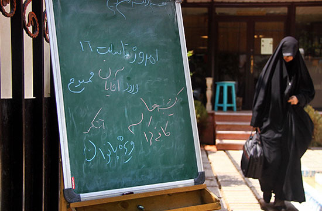
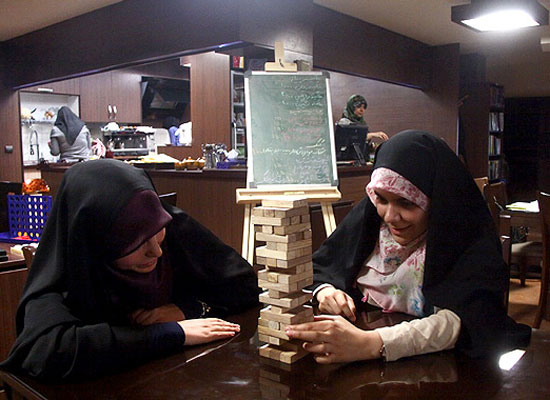
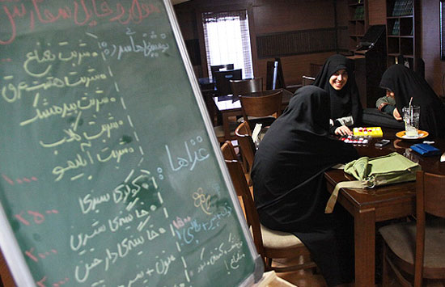
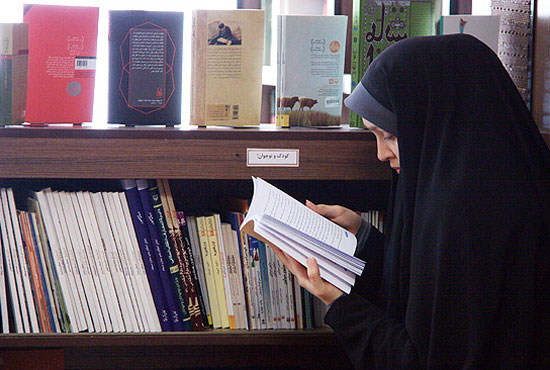

|
|

شکست پنهان مذهب در کافه نشینی زنان
آمنه شیرافکن
شنبه27 خرداد 1391
تصاویر کافه نشینی گروهی از دختران جوان پایتخت روی خبرگزاری مهر منتشر شد و واکنشها متفاوت و اغلب آمیخته به تعجب است. تصاویری از نماز خواندن در وسط کافی شاپ و عنوان «غذاهای اسلامی» و جمع شدن گروهی از دخترانی با پوشش چادر تصویر متفاوتی از فضای کافی شاپی را رقم زده است.
تصاویر فوکو، سارتر، دریدا و دیگر روشنفکران غربی جای خودش را داده به عکسهایی که راستش به جز شاخصه روحانی بودن، نام شان را نمیدانم و کتابهایی از جمله کتاب پر فروش «دا» روی پیشخوان کافه خودنمایی میکند.

اینها همه شاخصههایی است که طراحان کافهای برای زنان در نظر گرفته اند تا آن را در میان بازیهای رسانهای شان، یک روز روی سایت برده و ابعاد تازهای از تفکیک جنسیتی را به نمایش بگذارند. تفکیک جنسیتی که از جداسازی اتوبوس ، مترو و دانشگاه، امروز به ایده قهوه خانه زنان، رستوران زنان، هتل ویژه زنان و مواردی شبیه این رسیده است و گاه به طنز به خیابان کشی های جداگانه برای مردان و زنان.
اما باز در پس این کافه نشینی زنان که اتفاقا قرار است تنها روز یکشنبه برای دختران علاقهمند به کافه نشینی باز باشد، فرصتهای خوبی برای زندگی و لذت بردن از فضایی جمعی پنهان است با وجود نقدی که به تفکیک فضا دارم، باید به آن اشاره شود. چنانچه زنان مذهبی تا جایی که اطلاع داریم همواره گروه ها و جمع های دوستانه قوی و شبکه روابط منسجمی داشته اند که معطوف به برپایی جلسههای مذهبی و روضه خوانی و امور خیریه میشد. حالا زنان جوان مذهبی کافه نشینی را به عنوان جایگزینی برای هم نشینی های نوع جدید و امروزی تر برگزیده اند.
تجربه تفکیک فضا در جامعه ما نه تنها به کار نیامده که به افزایش انواع آزارهای جنسی علیه زنان در فضاهای مختلط باقی مانده،راه برده است. این نوع تجربه را میتوان از زنانی پرسید که در شلوغی ساعات مترو، فرصتی هر چند کوتاه را در واگنهای عمومی مترو به سر می برند و یا انواع آسیب هایی که زنان در همین تاکسی نشینی هایی روزمره با آن مواجه می شوند.
بنابراین تجربه تفکیک فضاهای جنسیتی در ایران، چندان رهاورد قابل دفاعی را پیش روی ما قرار نداده که حالا بخواهیم به رستوران و قهوه خانه زنانه بیندیشیم. اما این کافه نشینی عجیب و غریب از اهمیت رجوع به عرصه های اندیشه و گفت و گو نشان دارد.
در اینجا نمی خواهم به جزییات هزار فرضیه ای وارد شوم که پس ذهن من و شما درباره «اسپانسر» چنین طرح و ایدهای شکل گرفته است اینکه کدام افراد از انتشار چنین تصاویر و تزریق چنین ایدهای منتفع می شوند اما شکل منفرد این اتفاق، کافه نشینی، در لایههای پنهان خود نشان از ضرورت توجه به امر مدرن در زندگی های ملال آور زنان امروز دارد.

کافه در فرهنگ ایران و جهان فضایی متصل به حوزه های روشنفکری است و نسبتی با سبک زندگی مدرن دارد. اما از این هم که بگذریم ورود گروهی از زنان با پوشش چادر به کافه خود نشان از نیاز زنان به هم نشینی، حضور در عرصه های عمومی و تماس در فضایی مدرن دارد که مسالهای قابل تامل است.
به هر شکل اگر به تاریخ پشت سرمان نگاهی کوتاه بنیدازیم، هنوز اثراث آن فرهنگ حرمسرایی مبتنی بر سنت و پدرسالاری در لایه های مختلف جامعه ما به اشکال متفاوت بازتولید شده و اینکه حالا این کافه نشینی در این چرخه تاریخی، امری است که نمی توان به آسانی از کنار آن گذشت. فراموش نشود که وقوع انقلاب اسلامی با تمام محدودیت هایی که در بخشهایی برای حقوق زنان به وجود آورده در بخش آموزش زنان در پس همین ایمن سازی فضاها توانسته به ورود انبوهی از دختران خانواده های مذهبی به نهاد دانشگاه کمک کند. همان نهادی که امروز نگاه های دگماتیسم به جداسازی در آن همت گماشته اند.
بنابراین این کافه نشینی ورای تمام اهدافی که شاید سیاستگذاران در پرده به آن فکر می کنند، روایت مثبتی از حضور زنان در جامعه داشته و تصویر به نمایش گذاشته شده از فضای فیزیکی این کافه، نشانی از توجه به اهمیت کافه – کتاب و کافه نشینی در ایران دارد. و البته نمیتوان فراموش کرد تعداد بیشماری از کافه – کتاب هایی که به حکم اماکن و نهادهای دیگر وابسته، بسته شده و امروز نمایی مشابه آن حالا با کتاب های اسلامی تر به نمایش وب سایت های رسمی نزدیک به نظام در آمده است. گویی اینکه فرم کافه نشینی با اشکالی چون فضای تیره، نور کم، جا دادن برخی تصاویر متفکران، آب میوه، سرو غذا و حتی گنجاندن قفسههای کتاب از سوی دیدگاههای سنتی و مذهبی جامعه به رسمیت شناخته شده است.

پس می توان به این کافه نشینی جور دیگری نگاه کرد. ضرورت امر مدرن در ساحت زندگی دختران محجبه آنها را به هم نشینیهای زنانه هدایت کرده، هم نشینی هایی که چیزی فراتر از آن جمع های مذهبی و روضه خوانی ها بوده و حتی در آن نمازشان را می خوانند و غذای اسلامی می خورند!
در این کافه می توانند تصاویر شخصیت های محبوب شان را قاب کنند و به در و دیوار پاتوق شان بیاویزند، می توانند خارج از «مانیتورینگ» سنتی خانواده ها دمی در کنار هم به سر برند و به گپ و گفت و گو بپردازند. میتوانند کتاب دا بخوانند یا هر کتاب مذهبی دیگری. حتی می توانند سال آینده مراسم اعتکاف را در گوشهای از همین کافه برپا کنند و گوشی های «اچ.تی.سی» و «اپل» و لپ تاب و نوت بوک شان را بیاورند. از اینترنت کافه به آن سوی و این سوی آب ها متصل شوند و در میانه اعتکاف به فیس بوک شان هم سری بزنند.
نکته این است که در تمام این بازی های رسانهای تصویر زندگی مدرن زنان در جریان است. البته همین جا باید به صراحت از دغدغهام پیرامون آنچه در پس چنین بازی گردانی انجام میشود، بگویم. اینکه کدام نیروهای فکری و با چه نیت و اعتبار و هزینه هایی به گروهی از دختران اجازه حضور یک روزه در این کافه را می دهند و اینکه امر قدرت باز هم در بالادست امر جنسیت به بازی گردانی خود مشغول شده است. اما باز نمی شود از مواهب همین بازیهای ساده برای تهی کردن مفهوم کافه از کافه نشینی اش گذشت.

عکس ها دارد پشت سر هم ایمیل می شود. تابناک و سایت های دیگر تصاویر را لینک دادهاند و بخشی از ایده طراحان کافه زنان تا همین جای کار محقق شده است . اما مواهب کافه نشینی اینگونه برای زنان در فضایی تفکیک شده نیز بدون تردید آن ایده نخستین را خنثی خواهد کرد.
آن ایده نخستین هر چه باشد و از هر ایدئولوژی که سرچشمه گرفته باشد، در نهایت از خود ارادهای به امر مدرن نشان داده و در مرکز آن توجه به گفت و گو، اندیشیدن، پاتوق، جمع و هستههای هم نشینی پنهان است. پیام پنهان کافه نشینی زنان محجبه، نوعی شکست آشکار گفتمان مذهبی برای ایجاد جایگزین های به اصطلاح بومی برای نسل جوانی است که این روزها ایام بیکاری و گرانی را در همین کافه نشینی ها طی کرده و ساعاتی را رهاتر از همیشه زندگی می کنند. زنان محجبه ایرانی نیز بخشی از همین نسل جوان سردرگم اند، نسلی که در میانه این سنت های همه جانبه، به حراج های فصلی «بنتون» و «آدیداس» فکر می کند و به تمام جهان مصرفی فوق لیبرال لبیک می گوید. پس می شود این کافه نشینی را به فال نیک گرفت و آن را تداوم عقیم ماندن لایههای مذهبی جامعه ایرانی برای پاسخ به نیازهای نسل جوان عنوان کرد.
عکس: فرارو